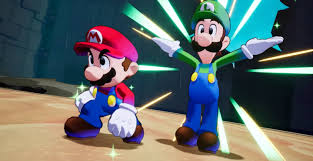
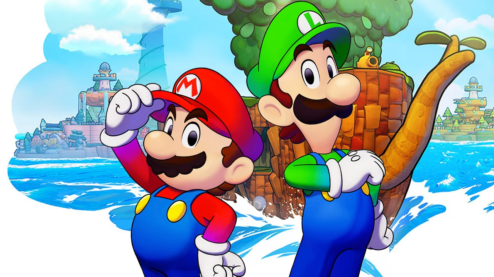

Days: 0 / Hours: 0 / Mins: 0 / Secs: 0
What is Mario and Luigi: Brothership?
Mario and Luigi: Brothership is the latest upcoming first-party game from Nintendo. The game features the titular characters, Mario and Luigi, as they sail around the world of Concordia on a boat that’s also an island. It keeps the same wacky style and humor as the past Mario and Luigi games, but with improved graphics on the Switch. The theme of the game is connection, which is emphasized by the fun electrical-themed characters you meet throughout the game. Bowser does show up as one of the villains of the game, but there’s still lots of other fun villains like the wacky extension corps.

Why is Brothership exciting?
The Mario and Luigi game series is a fan-favorite series of games by Nintendo. It is a series of RPGs with unique gameplay where you control both Mario and Luigi simultaneously. Previously, the studio that developed every Mario and Luigi game was Alphadream, but the studio shut down in 2019. Many people thought that there weren't going to be any more Mario and Luigi games because of this. However, Mario and Luigi: Brothership was announced in June of 2024, being developed by the studio Acquire. It's also the first Mario and Luigi game on a home console.
How do I play Brothership?
Mario and Luigi: Brothership is available to buy in many stores. Some of these stores are Gamestop, Walmart and Target. It is only on the switch, so you won't be able to play it on any other console or a PC (unless you sail the high seas). (yo ho ho). It also doesn't seem to require motion controls unlike some past Mario and Luigi games, so any third-party controllers without motion control functionality can be used to play it.
